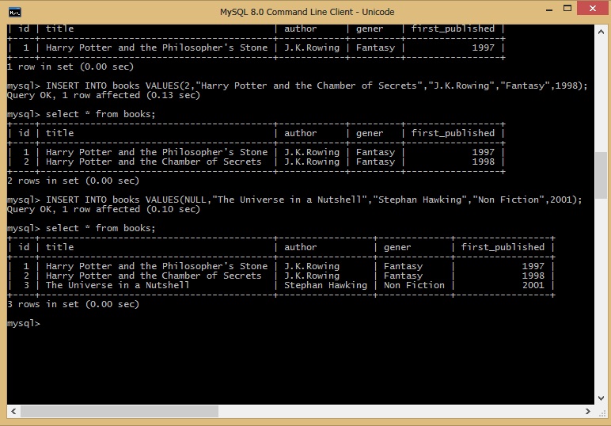
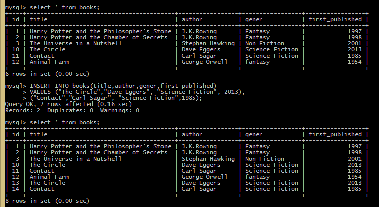
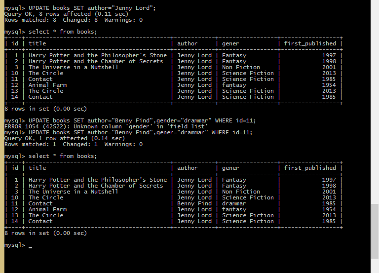

Introduction to CRUD
dynamic application တွေရဲ့အဓိကအပိုင်းကတော့ database ပဲဖြစ်ပါတယ်။e-commerce, sports team, social network site တွေနဲ့ကျွန်တော်တို့ရဲ့ phone ပေါ်မှာရှိတဲ့productivity app တွေမှာတောင်မှ data တွေကိုလိုအပ်ပြီးတော့ အချိန်နဲ့လိုက်ပြီးတော့ပြောင်းလဲဖို့အတွက်ပဲဖြစ်ပါတယ်။ဥပမာကျွန်တော်တို့က e-commerce site တစ်ခုကို run တဲ့အခါမှာ products တွေကိုရှာတာတွေ၊ stock count တွေကို update ပြုလုပ်တာတွေ၊ order အသစ်တွေ product အသစ်တွေကိုတည်ဆောက်တာတွေကို database ထဲမှာပြုလုပ်ပါတယ်။site ကတော့ dynamic ဖြစ်ပါတယ်။ဘာ့ကြောင့်လဲဆိုတော့အဲ့တာကအချိန်တိုင်းမှာပြောင်းလဲနေလို့ပဲဖြစ်ပါတယ်။database ထဲမှာရှိတဲ့ data တွေကိုလုပ်ဆောင်ဖို့အတွက်အတိုကောက်အနေနဲ့အဓိကကြတဲ့ operations လေးခုရှိပါတယ်။ပထမဆုံးတစ်ခုကတော့ကျွန်တော်တို့ data တွေကို database ထဲကိုထည့်ချင်တယ်ဆိုရင်ပထမဆုံးတည်ဆောက်ပေးခဲ့ဖို့လိုအပ်ပါတယ်။ဒုတိယအချက်ကတော့ data တွေကို read လုပ်ပေးဖို့လိုအပ်ပါတယ်။reading ထဲမှာတော့ result တွေကိုထားဖို့အတွက် searching နဲ့ filtering တွေပါဝင်ပါတယ်။နောက်ထပ်တစ်ခုကတော့ table တွေထဲမှာရှိတဲ့ data row တွေကို update ပြုလုပ်တာပဲဖြစ်ပါတယ်။နောက်ဆုံးတစ်ခုကတော့ data တွေကို remove ပြုလုပ်တာ delete ပြုလုပ်တာပဲဖြစ်ပါတယ်။အဲ့ဒီ 4 မျိုးကိုအတိုကောက်အနေနဲ့ acronym CRUD လို့ခေါ်ပါတယ်။ကျွန်တော်တို့ဒီတစ်ခါဆက်ပြီးလေ့လာသွားမှာကတော့database table တွေထဲကနေ inserting ,updating တွေနဲ့ deleting ပြုလုပ်ခြင်းတွေပဲဖြစ်ပါတယ်။CRUD operations တစ်ခုဆီမှာတော့သူတို့နဲ့ဆက်စပ်နေတဲ့ SQL keyword တွေတစ်ခုစီရှိပါတယ်။ကျွန်တော်တို့က database နဲ့ရင်းနှီးပြီးသားဖြစ်နေရင်တော့ select ဆိုတဲ့ keyword အသုံးပြုချင်းကိုကျွန်တော်တို့ရင်းနှီးပြီးသားဖြစ်ပါလိမ့်မယ်။
Adding a Row to a Table
CRUD operation တွေတစ်ခုစီမှာကိုယ်ပိုင် SQL keyword တွေရှိပါတယ်။database ထဲမှာရှိတဲ့ data တွေကို reading ပြုလုပ်ဖို့အတွက်ကတော့ SELECT ဆိုတဲ့ keyword ကိုအသုံးပြုတယ်ဆိုတာကိုသိခဲ့ပြီးသားဖြစ်ပါတယ်။row တွေကို create ပြုလုပ်ဖို့အတွက်ကတော့ INSERT ဆိုတဲ့ keyword
ကိုအသုံးပြုပါတယ်။row တွေကိုထည့်ဖို့အတွက် INSERT INTO နောက်မှာ table name ထည့်ပေးပြီးတော့ရေးပေးရပါမယ်။အဲ့ဒီနောက်မှာတော့ value ဆိုတဲ့ keyword ကိုရေးပြီးတော့ နောက်မှာ parentheses နဲ့ထည့်ပေးရမှာပဲဖြစ်ပါတယ်။parentheses ထဲမှာထည့်ထားတဲ့ values
တွေကအစဉ်လိုက်ဖြစ်နေရမှာဖြစ်ပြီးတာ့ column ထဲမှာထည့်ထားတဲ့အတိုင်းပဲရှိနေမှာဖြစ်ပါတယ်။ကျွန်တေ်တို့ဥပမာပုံထဲမှာ insert အတွက် row ထည့်တာကိုဖော်ပြထားတာပဲဖြစ်ပါတယ်။ကျွန်တော်တို့ table တွေထဲမှာသတ်မှတ်ခဲ့တဲ့ id က unique ဖြစ်ဖို့ရန်အတွက်ထောက်ပံ့ပေးပါတယ်။ပြီးတော့သူတို့ကို
table ထဲမှာရှိတဲ့ particular row တွေအတွက်ရည်ညွန်းပြီးအသုံးပြုနိုင်ပါတယ်။database တွေအများစုမှာတော့ id တွေက auto increasement တွေနဲ့အလုပ်လုပ်ကြတာပဲများပါတယ်။နောက်ပြီးကျွန်တော်တို့က id နေရာမှာ Null ပေးခဲ့ပြီးတော့အလုပ်လုပ်တဲ့အခါမှာလည်း
id ကို auto ထည့်ပေးသွားမှာပဲဖြစ်ပါတယ်။

Adding Multiple Rows to a Table
queries တွေကိုရေးတဲ့အခါမှာသို့မဟုတ် database ကနေ information တွေကိုဖတ်တဲ့အခါမှာကျွန်တော်တို့ကပုံမှန်အားဖြင့် query တစ်ခုကိုရေးပေးခဲ့ရပါမယ်။ဘာ့ကြောင့်လဲဆိုတော့ကျွန်တော်တို့ကရရှိလာတဲ့အဖြေနဲ့တစ်ခုခုကိုပြုလုပ်ဖို့လိုအပ်လို့ပဲဖြစ်ပါတယ်။table ထဲကို data တွေအများကြီးတစ်ခါတည်းထည့်ဖို့အတွက်
insert ကိုသုံးပြီးတော့ထည့်နိုင်ပါတယ်။အဲ့ဒီအတွက်ကျွန်တော်တို့က values တွေထည့်တဲ့ parenthesis နောက်မှာ comma ခံပြီးတော့နောက်ထပ် parenthesis တွေနဲ့ထပ်ထည့်နိုင်တာပဲဖြစ်ပါတယ်။ကျွန်တေ်ာတို့ဥပမာထဲမှာ row နှစ်ခုကို query တစ်ကြောင်းထဲနဲ့ပေါင်းပြီးတော့
insert ပြုလုပ်ပေးထားတာပဲဖြစ်ပါတယ်။ကျွန်တော်တို့ row တွေထည့်ပြထားတဲ့အထဲမှာတော့ id တွေကိုမထည့်ခဲ့ပါဘူး။ဒါပေမယ့် id တွေက auto increments တွေဖြစ်တဲ့အတွက်ကြောင့်အလိုအလျောက်သတ်မှတ်ပေးသွားတာပဲဖြစ်ပါတယ်။ကျွန်တော်တို့တွေက row တွေအများကြီးထဲ့မှာဖြစ်တဲ့အတွက်
comma ခံပြီးရေးထားပေးတာဖြစ်ပါတယ်။အဲ့တာတွေက statement တွေကို multi line အဖြစ်သတ်မှတ်တာပဲဖြစ်ပါတယ်။

Updating All Rows and Specific Rows in a Table
နောက်ထပ်ကျွန်တော်တို့လေ့လာသွားမှာကတော့ UPDATE ဆိုတဲ့ statement ပဲဖြစ်ပါတယ်။UPDATE statement ရေးဖို့ရန်အတွက်ကျွန်တော်တို့ကပထမဆုံး UPDATE ဆိုတဲ့ keyword ရယ် table name ရယ်ကိုရေးပေးရမှာပဲဖြစ်ပါတယ်။အဲ့ဒီနောက်မှာတော့ SET ဆိုတဲ့ keyword နဲ့ကျွန်တော်တို့ update
ပြုလုပ်မယ့် column ရဲ့ value ကိုထည့်ရေးပေးခဲ့ရမှာဖြစ်ပါတယ်။အဲ့ဒီနောက်မှာတော့ကျွန်တော်တို့က equality operator ကိုသုံးပြီးတော့ condition တွေကိုထားပေးခဲ့နိုင်ပါတယ်။ကျွန်တော်တို့ဥပမာပုံထဲမှာတော့ table တစ်ခုလုံးရဲ့ column တွေအကုန်လုံးကို
update ပြုလုပ်တာကိုလည်းဖော်ပြထားပြီးတော့ where နဲ့ထည့်ပြီးပြောင်းပေးတာကိုလည်းရေးပြထားပါတယ်။operator တွေအသုံးပြုတဲ့အခါမှာလည်းကျွန်တော်တို့က equality operator တင်မဟုတ်ပဲ inequality တွေ greater than တွေနဲ့ less than ဆိုတာတွေကိုလည်းအသုံးပြုနိုင်ပါတယ်။နောက်ထပ်ကျွန်တော်တို့က
IN ဆိုတဲ့ keyword ကိုလည်းအသုံးပြုနိုင်ပါတယ်။အဲ့တာကတော့ကျွန်တော်တို့ထားမယ့် value တွေကို searching ပြုလုပ်ပေးတာပဲဖြစ်ပါတယ်။နောက်ထပ် between ဆိုတဲ့ keyword ကိုသုံးပြီးတော့လည်း search ပြုလုပ်ဖို့အတွက် range သတ်မှတ်ပေးထားခဲ့နိုင်ပါတယ်။patterns
of characters တွေကိုရှာဖို့အတွက်တော့ကျွန်တော်တို့ LIKE ဆိုတဲ့ keyword ကိုသုံးနိုင်ပါတယ်။

Removing Data from All Rows in a Table and Specific Rows
ကျွန်တော်တို့ဒီတစ်ခါမှာတော့ CRUD operations ထဲမှာရှိတဲ့နောက်ဆုံး keyword ဖြစ်တဲ့ delete ဆိုတာကိုလေ့လာသွားမှာဖြစ်ပါတယ်။ပြီးခဲ့တဲ့ update မှာအလုပ်လုပ်ပုံနဲ့ delete keyword ကပုံစံအတူတူပဲဖြစ်ပါတယ်။DELETE statement ကိုရေးဖို့အတွက်ကျွန်တော်တို့က DELETE FROM <table name>စတဲ့ပုံစံမျိုးနဲ့စပြီးရေးပေးရမှာဖြစ်ပြီး delete keyword က table ထဲမှာရှိတဲ့ rows တွေကိုဖယ်ရှားပေးတာပဲဖြစ်ပါတယ်။အစောကရေးပြတဲ့ပုံစံရဲ့နောက်မှာ condition တွေအခြား things တွေထပ်မပါရင်တော့ ကျွန်တော်တို့ table ထဲမှာရှိတဲ့ data တွေအကုန်လုံးကိုဖျက်သွားမှာဖြစ်ပါတယ်။နောက်ထပ်ကျွန်တော်တို့သတ်မှတ်ထားတဲ့ specific row ကိုပဲ remove ပြုလုပ်နိုင်ပါတယ်။အဲ့လိုပြုလုပ်ဖို့အတွက်ကျွန်တော်တို့က WHERE condition ထည့်ပြီးတော့အလုပ်လုပ်ပေးရမှာပဲဖြစ်ပါတယ်။Conditions တွေက sizes တွေအမျိုးမျိုး shapes တွေအမျိုးမျိုးနဲ့လာနိုင်တာပဲဖြစ်ပါတယ်။Operators တွေကတော့ equality, inequality တွေ greater than တွေသို့မဟုတ် less than စတာမျိုးတွေပဲဖြစ်ပါတယ်။နောက်ထပ် condition တစ်ခုဖြစ်တဲ့ IN keyword ကတော့ values အစုတွေကြားမှာရှိတာကိုရှာဖို့အတွက်ပဲဖြစ်ပါတယ်။range တွေကိုသတ်မှတ်ဖို့အတွက်ကတော့ BETWEEN keyword ကိုအသုံးပြုတာပဲဖြစ်ပါတယ်။နောက်ထပ် like ဆိုတဲ့ keyword ကိုတော့ characters patterns တွေအတွက်အသုံးပြုတာပဲဖြစ်ပါတယ်။
//Removing all data in table
DELETE FROM <table name>;
//Removing specific rows
DELETE FROM books WHERE title LIKE "harry potter%";
Introduction to Transactions
ကျွန်တော်တို့ commitment အကြောင်းကိုဆက်ပြီးလေ့လာသွားမှာပဲဖြစ်ပါတယ်။database တွေနဲ့ relationship ပြုလုပ်တဲ့အခါမှာကျွန်တော်တို့က committed ပြုလုပ်ဖို့လိုအပ်ပါတယ်။အထူးသဖြင့်ကျွန်တော်တို့က dataတွေကို modifying ပြုလုပ်တဲ့အခါမှာပဲဖြစ်ပါတယ်။CRUD operation အတွက်ကျွန်တော်တို့က statement ရေးတဲ့အခါမှာကျွန်တော်တို့တို့executed ပြုလုပ်ချင်တာကိုအတိအကျ SQL statement တွေရေးဖို့လိုအပ်ပါတယ်။production environment မှာတော့ပြီးခဲ့တဲ့ state တွေကိုနဂိုအတိုင်ပြန်ရအောင်ပြုလုပ်ဖို့အတွက်ခက်ခဲပါတယ်။အဲ့တာကဘာ့ကြောင့်လဲဆိုတော့ကျွန်တေ်ာတို့ရဲ့ statements တွေက autocommit mode ထဲမှာအလုပ်လုပ်နေလို့ပဲဖြစ်ပါတယ်။ဆိုလိုတာကတော့ committed တွေကိုယူပြီးတော့ execute ပြုလုပ်လို့ သို့မဟုတ် disk ပေါ်မှာ save ပြုလုပ်ခဲ့လို့ပဲဖြစ်ပါတယ်။database တွေအများစုမှာ autocommit က default ပါဝင်တဲ့ switch တစ်ခုပဲဖြစ်ပါတယ်။operation တစ်ခုလုပ်ဆောင်ပြီးတဲ့အခါမှာ autocommit ပြုလုပ်သွားတာပဲဖြစ်ပါတယ်။ဆိုလိုတာကတော့ operation ပြုလုပ်ပြီးကျွန်တော်တို့ရဲ့ diskပေါ်မှာ save ပြုလုပ်ခဲ့လို့ပဲဖြစ်ပါတယ်။နောက်ပြီးကျွန်တော်တို့တွေက multiple statement တွေကိုအလုပ်လုပ်ချင်တယ်ဆိုရင် အဲ့တာတွေကအတူတကွ execute ပြုလုပ်တာကိုရယူပေးပါတယ်။ဥပမာကျွန်တေ်ာတို့က database တွေကိုပထမဆုံးအကြိမ်အဖြစ် populating ပြုလုပ်တဲ့အခါမှာ seeding ကိုသိထားရမှာပဲဖြစ်ပါတယ်။multiple statements တွေကို run ဖို့အတွက် sql file ထဲမှာပုံမှန်ပြင်ဆင်နေတာပဲဖြစ်ပါတယ်။အဲ့တာကို script file လို့လည်းခေါ်ပါတယ်။ကျွန်တော်တို့က populate table ထဲကို statements 6 ခုကိုတစ်ပြိုင်တည်းထည့်လိုက်တယ်ဆိုပါဆို့။၃ ကြောင်းမြောက်အရောက်မှာကျွန်တော်တို့ computer က crashes ဖြစ်သွားတာသို့မဟုတ် accident ဖြစ်သွားရင် database တွေထဲမှာပထမဆုံးသုံးခုကပဲဝင်သွားပြီးတော့နောက် ၃ ခုကတော့ကျန်နေခဲ့မှာပဲဖြစ်ပါတယ်။နောက်တစ်ခါထပ်ပြီး ကျွန်တော်တို့ computer ပြန်အလုပ်လုပ်လို့ရတဲ့အခါမှာအဲ့ဒီ statement တွေကိုပြန် run ကြည့်တဲ့အခါမှာအဲ့တာတွေက error သို့မဟုတ် record တွေကနှစ်ခုတွေထပ်ပြီးတည်ဆောက်နေပါလိမ့်မယ်။ကျွန်တော်တို့တွေကအဲ့တာတွေကို manually အရပြုပြင်နိုင်ပါတယ်။ ပထမသုံးကြောင်းကိုဖယ်ပြီးတော့ နောက်သုံးကြောင်းကိုပဲ run ပေးရမှာဖြစ်ပါတယ်။ ဒါပေမယ့်တကယ့်လက်တွေ့မှာဆိုရင်တော့ database seed script တွေက statements တွေ ၁၀၀ ရာမကပဲ 1000 ကျော်တွေပါဝင်နိုင်ပါတယ်။အဲ့ဒီအခါမျိုးမှာကျွန်ေတော်တို့တွေကခုနကလိုပြန်ပြီးပြုပြင်နေဖို့အတွက်အဆင်မပြေပါဘူး အဲ့တာကြောင့်ကျွန်တော်တို့က autocommit ဆိုတာကို disable ပြုလုပ်တဲ့နည်းလမ်းကိုပဲအသုံးပြုရမှာဖြစ်ပါတယ်။အဲ့လိုပြုလုပ်ဖို့အတွက်ကျွန်တော်တို့က transactions တွေကိုအသုံးပြုရမှာပဲဖြစ်ပါတယ်။transactions တွေစပြီးရေးတဲ့အခါမှာကျွန်တော်တို့က statement တွေကိုမရေးခင်မှာ autocommit တွေကိုပိတ်ခဲ့ဖို့အတွက် BEGIN TRANSACTION ဆိုတာကိုရေးပေးခဲ့ရပါမယ်။အဲ့ဒီ instructs တွေက database ထဲမှာရှိတဲ့ autocommit တွေကိုပိတ်ပေးထားမှာပဲဖြစ်ပါတယ်။တစ်ခါတစ်ရံမှာကျွန်တော်တို့ BEGIN ဆိုတဲ့ keyword ကိုလည်းမြင်ရပါလိမ့်မယ်။နောက်ဆုံး statements တွေရဲ့နောက်ဆုံးမှာတော့ COMMIT ဆိုတာကိုတွေ့ရပါလိမ့်မယ်။BEGIN keyword က statements တွေကို save ပေးပြီးတော့ COMMIT ကတော့ autocommitted ကိုပြန်ပြီးဖွင့်ပေးထားတာပဲဖြစ်ပါတယ်။အဲ့တာတွေက file တွေကို generate ပြုလုပ်ပေးတာဖြစ်ပြီး database backups တွေပြုလုပ်တာပဲဖြစ်ပါတယ်။
BEGIN TRANSACTION;
INSERT INTO genres (name) VALUES ("None Fiction");
INSERT INTO genres (name) VALUES ("Fiction");
INSERT INTO genres (name) VALUES ("Xlassic");
//This can be backup files and generate statements
BEGIN;
INSERT INTO genres (name) VALUES ("None Fiction");
INSERT INTO genres (name) VALUES ("Fiction");
INSERT INTO genres (name) VALUES ("Xlassic");
COMMIT;
Rolling Back from Transactions
ကျွန်တော်တို့က transaction တွေကို complex updates တွေမှာလည်းအသုံးပြုနိုင်ပါတယ်။ကျွန်တော်တို့က typo တွေသို့မဟုတ် တစ်ခုခုကိုမေ့နေခဲ့တဲ့အခါတွေမှာ transition တွေရဲ့အလည်မှာဘာတွေဖြစ်ပွားသလဲဆိုတာကိုလေ့လာကြည့်ပါမယ်။အဲ့တာတွေအတွက်ကျွန်တော်တို့က ROLLBACK ဆိုတဲ့ keyword ကိုအသုံးပြုပါတယ်။ကျွန်တော်တို့တွေက transaction တွေကိုစဖို့အတွက် Begin ကိုရေးပြီးတော့ row တွေထဲ့ဖို့အတွက်ရေးရမှာပဲဖြစ်ပါတယ်။ကျွန်တော်တို့က row တွေကိုမြင်ရအောင်ထည့်ပေးပေမည့်အမှန်တကယ်တော့အဲ့တာတွေက add ပြုလုပ်မပေးပါဘူး။ အဲ့တာကြောင့်ကျွန်တော်တို့က ROLLBACK ဆိုတဲ့ keyword ကိုအသုံးပြုခဲ့တာပဲဖြစ်ပါတယ်။အဲ့တာကတော့အမြဲတမ်း option တွေပဲဖြစ်ပါတယ်။


Can Request Example project File